01What the research says
Three deep-dives (full briefs live with the session notes; the load-bearing findings are below).
Simple mobile apps done well
- Anchored bottom primary button: 48–56px tall, 16px gutters, safe-area padding; bottom placement gets up to 40% more taps.
- Same physical slot for CHECK→CONTINUE so advancing is muscle memory (spam-Enter works).
- Duolingo press physics:
box-shadow: 0 4px 0 darker, active → collapse + translateY. (Lingo'sprimary-3dalready does this.) - Progress in fixed-arc flows: one thin bar, no numbers, ~300ms ease-out fill, never regresses.
- Touch targets ≥44–48px; 8pt spacing grid; body text ≥16px (also stops iOS input zoom).
- Feedback = color + icon + text (+ sound). Never color alone. Correct answer verbatim, prominent.
- Explicit continue after wrong answers; optional auto-advance ~0.8s on correct only.
100dvhshell, single internal scroller; overscroll-none; tap-highlight transparent;touch-action: manipulation.- Skeletons over spinners for content waits; nothing for <200ms.
- Contrast: white on #58cc02-style greens fails (2.2:1) — Lingo's darker #059669 on white passes.
Learning & SRS apps
- Lesson anatomy (Duolingo): X + bar header → instruction line → prompt → answers → anchored action bar → feedback sheet in the same slot.
- Reviewers must show queue counts (Memrise hid them → refund threads). Lessons shouldn't (bar only).
- Anki/FSRS: interval previews on grade buttons tempt "grading to schedule" — FSRS is more accurate for mostly Again/Good users. Default to hiding intervals; 2-button grading with descriptive labels ("Didn't know / Knew it") is the modern take (jpdb-style).
- Undo + typo forgiveness are must-haves (WaniKani's biggest userscript category is literally "undo").
- Answer reveal = append below (Anki/jpdb/Bunpro), not a literal 3D flip.
- Cloze feedback gold standard (Bunpro): wrong-answer-specific hints, not generic "incorrect".
- End-of-session: accuracy, counts, and a tappable miss list. No interstitial gauntlet.
- JA text:
lang="ja"everywhere, line-height ~1.8, never italic, display-size learning targets, ruby furigana with reserved space. - What survives the gamification backlash: correctness feedback, progress bars, mastery-stage changes. What doesn't: streak guilt, hearts, leagues. (Matches the house no-babying rule.)
The "Claude look" — and where agent-driven UI work fails
The convergent AI aesthetic ("distributional convergence" per Anthropic; Adam Wathan's indigo apology; Krebs' 1,590-site Show HN audit) has known tells: default-Tailwind indigo/purple, gray-50 + white cards + shadow-sm, rounded-2xl on everything, every block boxed in a card, badge pill over hero, identical icon-on-top feature cards, ALL-CAPS eyebrows everywhere, emoji as icons, no designed empty/error states. Lingo mostly dodges the palette tells (emerald token system, themed radius) but has the carding + eyebrow density tells on Home/Practice, and had undesigned empty states.
- Un-card: cards only for independently actionable content; never nested.
- One accent as a page-level budget; structure (numbers/eyebrows/dividers) must encode something true.
- Agent failure modes to guard against: declaring victory on unchanged screenshots; tiny text looking fine in full-page shots (crop!); adding decoration instead of fixing hierarchy; 2px-tweak timidity; never checking hover/error/empty states.
- This review's mitigations: every claim is backed by a before/after capture at true viewport size; interactive states are click-scripted; each round names what the eye should see 1st/2nd/3rd before touching code.
02Lesson player
The flagship surface. The shell was already app-like (fixed height, internal scroller, 3D buttons) — the gaps were chrome noise, a wandering primary button, dead space, and feedback that whispered.
Focused shell: chrome, dead space, anchored action SHIPPED
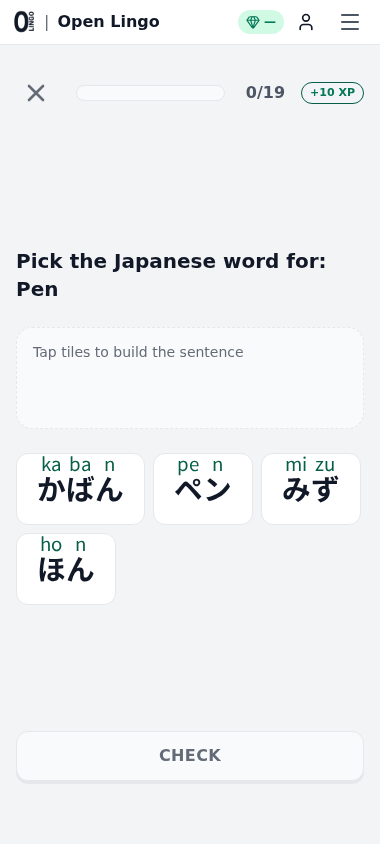
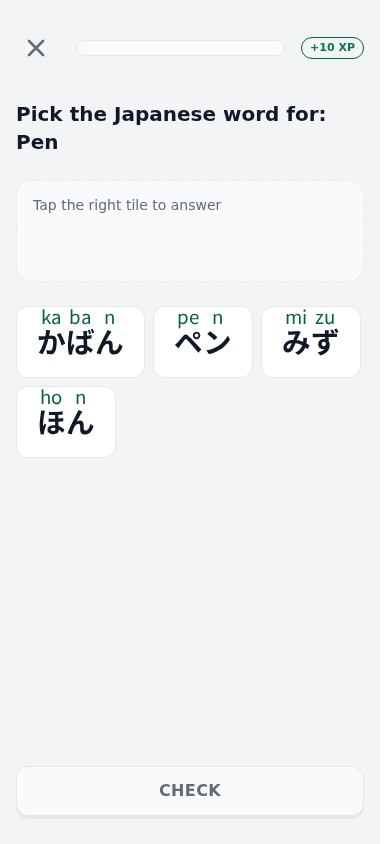
- Global chrome removed in focused flows (logo/gems/avatar/hamburger header, funding pill, floating language flag) — the session header (X + bar) is the only chrome, like every dedicated learning app.
Layout.tsxfocusedFlow now drops the header instead of just the footer. - Content starts at the top — the prompt is the first thing the eye hits; previously the cluster floated mid-screen leaving ~150px of dead space under the header.
- CHECK/CONTINUE anchored to the bottom slot in all 21 step views (mt-auto action block; long content scrolls, button stays put) — same physical place on every step type, Duolingo's muscle-memory invariant.
- Numberless progress bar — the "0/19" readout duplicated the bar and read as work-remaining; screen readers still get exact position. Review or replay passes keep their explicit counts (that's a queue, not an arc).
- Also shipped globally:
overscroll-behavior: none, tap-highlight removal,touch-action: manipulationon buttons.
Wrong-answer feedback SHIPPED was a defect
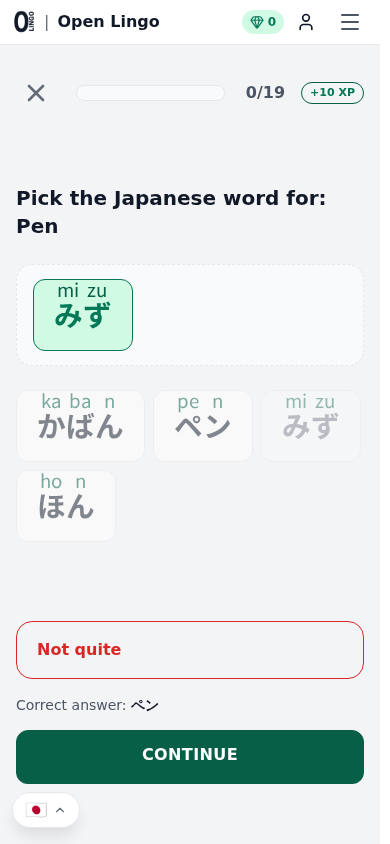
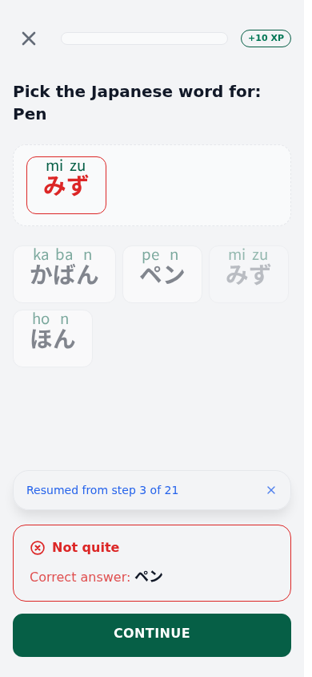
- Defect fixed: the learner's wrong answer stayed green-tinted in the answer slot at the exact moment the verdict said "Not quite". Placed tiles now flip to the error palette on a wrong submit.
- The correct answer moved into the verdict banner at reading size with
lang="ja"— it was a 12px muted footnote, the least visible thing on screen at the moment it matters most. - Icon + text verdict (✗/✓ circle) so the state survives color-blindness; banner keeps
role="alert". - The soft-red palette stays deliberately calm — "teaching, never scolding" (existing retiree-audit P0) is preserved; the CTA stays neutral.
Info / teach steps SHIPPED
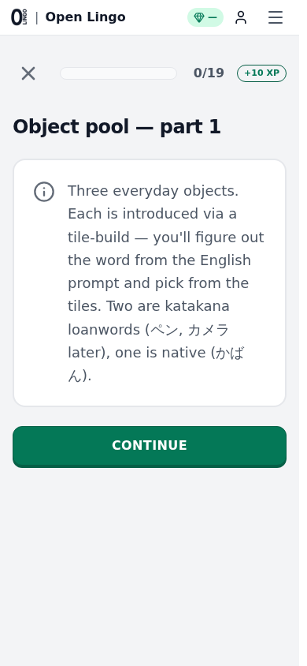
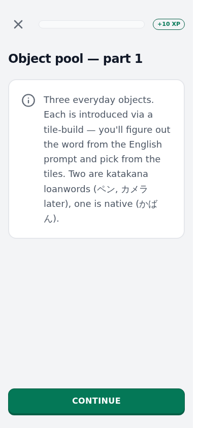
- CONTINUE no longer floats directly under the card mid-page — it lives in the same bottom slot as every exercise's CHECK.
Desktop
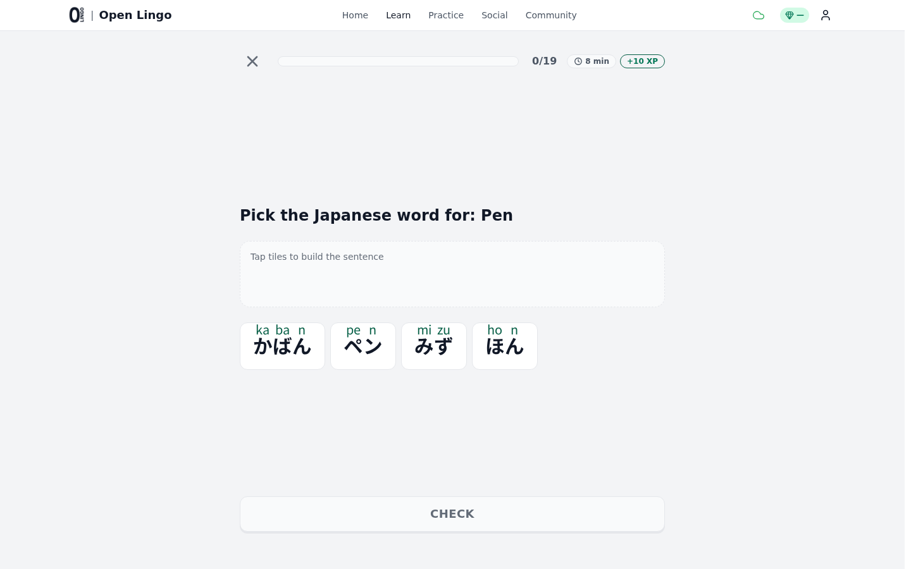
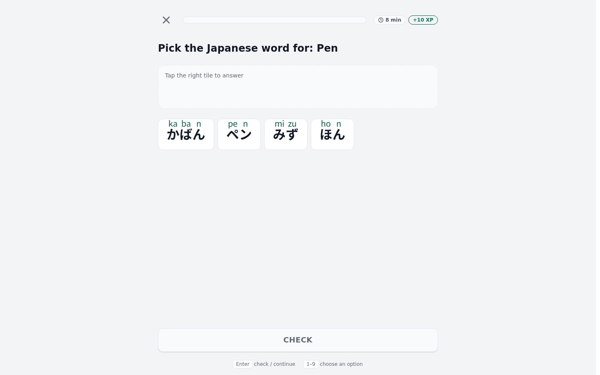
- Same shell, now without the site nav; the column breathes and the action bar is where the eye expects. Keyboard already works (Enter to check/continue via
useLessonKeyboard). - PROPOSAL a slim keyboard-hint row on desktop ("Enter ↵ check · 1–9 pick tiles") — power users find these by accident today.
03Flashcard player
Audited with a seeded unlock set (24 course atoms). The bones are right — append-style reveal, visible queue counts, 1–4 grade keys — and the research points at three sharpenings.
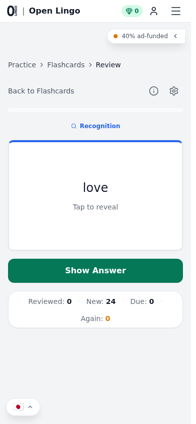
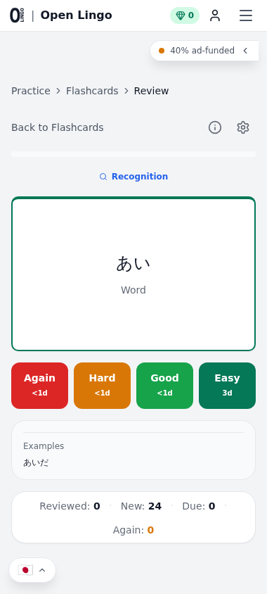
- GOOD Queue counts always visible (Reviewed/New/Due/Again) — the thing Memrise died on. Reveal appends below (correct pattern). Number-key grading exists.
- PROPOSAL — interval previews off by default. The "<1d / 3d" chips on grade buttons invite grading-to-schedule, which corrupts FSRS (its maintainers' own guidance; FSRS is more accurate for mostly-Again/Good users). Suggest: hide by default, "show scheduling" toggle in the deck settings gear for the Anki crowd.
- PROPOSAL — two-button default grading. "Didn't know" (red) / "Knew it" (green) with Hard/Easy behind the same toggle. jpdb-style experience-descriptive labels beat Anki jargon for non-veterans; keeps 1/Space keys.
- PROPOSAL — undo. One-step "Oops" (Backspace / Ctrl+Z) to retract the last grade. WaniKani's missing undo is its single largest userscript category; misgrades are FSRS noise.
- PROPOSAL — focused chrome. The reviewer keeps the full site header + breadcrumbs. Adding
/practice/flashcards/reviewto focusedFlow + an X-out header would match the lesson player. (Held for Spencer's call since the hub link row also carries the info/settings triggers.) - COPY BUG (fixed) The empty state told JA learners to "select Korean to try the sample deck" — stale copy from before JA lesson decks existed. Now explains cards unlock from lessons.
04Grammar review session
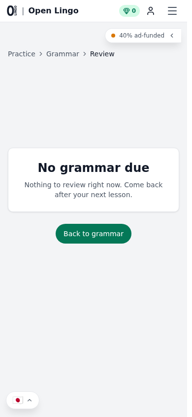
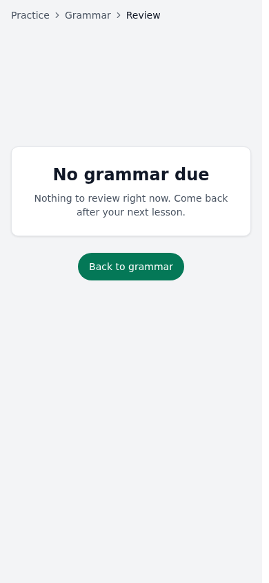
- SHIPPED Session inherits the focused shell (no global header) via the same Layout change; shell height retuned.
- NOTE Session-with-due-items states should be re-audited after Spencer's 2026-07-03 playtest — the step UI is shared with the lesson player, so the anchoring/feedback wins apply automatically.
- PROPOSAL Empty state could show the next-due time ("3 points due tomorrow") instead of a bare "come back later" — an empty screen is an invitation to act.
05Home, Practice hub, Learn
Home headline fix shipped
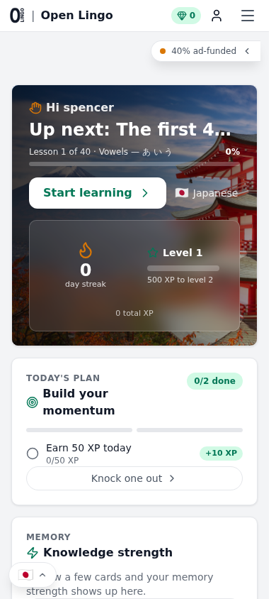
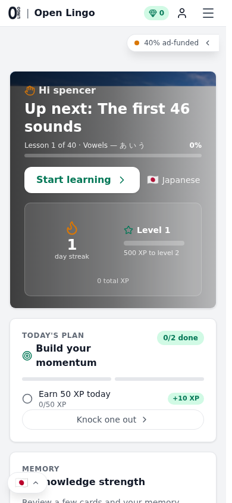
- SHIPPED Hero headline truncated mid-word at 390px ("Up next: The first 4…") — now clamps to two lines.
- KEEP The photo-background hero is genuinely distinctive — it's the page's signature element. Don't let future passes flatten it into a plain card.
- PILLAR TENSION "0 day streak" flame front-and-center, "Build your momentum", "Earn 50 XP today", "Knock one out" — this is the babying/streak-guilt language the house rule bans, aimed at an adult who opened the app voluntarily. Proposal: replace the streak tile with facts (cards due, next lesson, knowledge strength) and let TODAY'S PLAN copy state what's there rather than nudge. Not changed unilaterally — it's a product-voice call.
- STYLE Three ALL-CAPS eyebrows on one screen (TODAY'S PLAN / MEMORY / REVIEW) is the templated-UI tell; one per view is plenty.
Practice hub
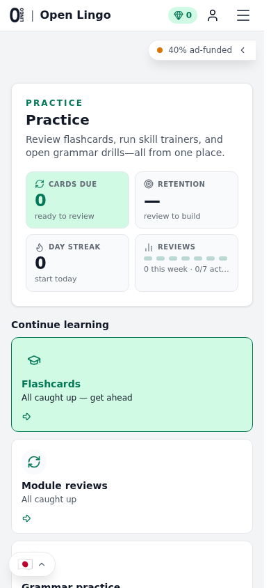
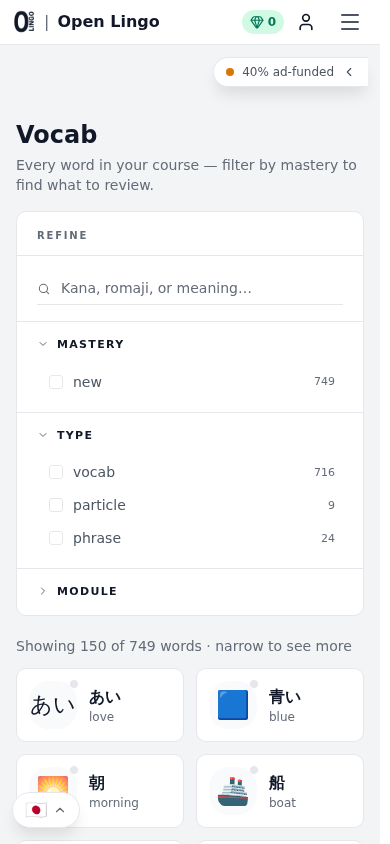
- PROPOSAL — un-card the hub. Every row (Flashcards, Module reviews, Grammar practice…) is a full bordered card with icon + arrow, visually identical whether it has work for you or not. Suggest: stat strip stays, then a flat list with dividers where the due badge is the loudest element — density where it serves the task.
- The DAY STREAK stat tile has the same pillar tension as Home.
- Vocab shown for contrast: filter rail + count badges + semantic emoji illustrations — information-dense and honest. It's the page closest to the bar already.
Learn / course map
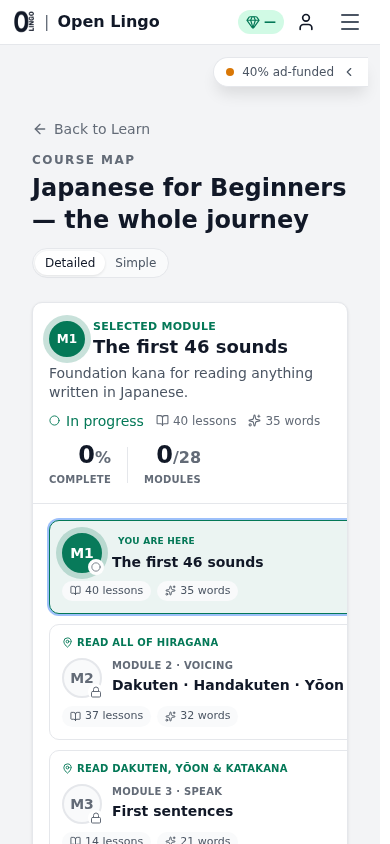
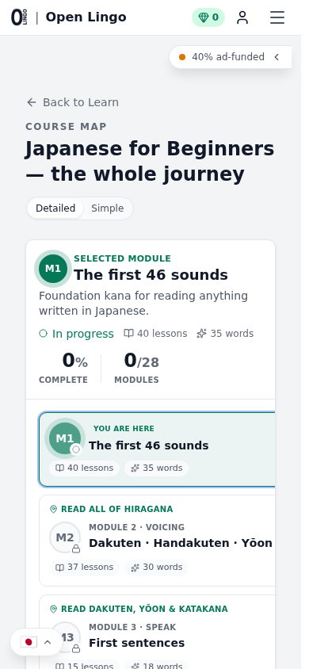
- SHIPPED The first-session survey modal used to float over any /learn route — including a deep-linked lesson a brand-new user was trying to take (it blocked their taps until answered). It now waits for the Learn overview.
06Bigger proposals (not built — Spencer's call)
| Where | Proposal | Why |
|---|---|---|
| lesson player | Bottom feedback sheet that replaces the action bar in place (green/red tinted band containing verdict + correct answer + CONTINUE), sliding up ~250ms. | The banner now sits above the button; the full Duolingo pattern puts CONTINUE inside the tinted band so the thumb never moves and the verdict is unmissable. Half a step further than what shipped. |
| lesson player | Auto-advance on correct (~800ms, cancellable) as a setting, default off. | Explicit continue is right for wrong answers; power users grinding reviews love the flow. LingoDeer ships it as a setting. |
| flashcards | 2-button grading default + interval previews off + undo (details in §03). | FSRS accuracy + simpler choice; previews/4-button stay one toggle away. |
| home | Replace streak/XP framing with facts (due counts, next lesson, strength). | House pillar: capable adults, no manufactured obligation. |
| practice hub | Un-card into a dense list where due-badges carry the hierarchy. | De-AI checklist: cards only for independently actionable content; identical cards flatten priority. |
| mobile nav | Back-arrow + title instead of breadcrumbs on inner practice pages. | Breadcrumbs are a desktop-web idiom; apps use back+title. (Bigger refactor: PageHeader component.) |
| completion | Lesson-complete screen: add a tappable miss list (the items you got wrong, replayable). | Highest-value summary element per research; almost nobody does it well. |
07Bugs & observations surfaced while auditing
| Sev | What | Where / status |
|---|---|---|
| fixed | Wrong-answer tiles stayed success-green after an incorrect submit. | BuildSentenceStepView — fixed this pass. |
| fixed | FTUE survey modal blocked deep-linked lessons/course map for new users. | LearnLayout — gated to overview routes. |
| fixed | Flashcards empty state pointed JA learners to "select Korean". | FlashcardTester + en.json copy. |
| fixed | Home hero headline truncated mid-word on mobile. | HeroContinue — line-clamp-2. |
| fixed | "Resumed from step N of M" toast rendered over the bottom action bar / feedback banner. | ToastContainer — focused flows stack toasts above the action area (R3). |
| verify! | Flashcard modality mapping looks inverted. FlashcardTester.tsx:590: "Recognition: front=English, reveal=Japanese" — but the engine defines recognition as shown stimulus → identify meaning (types.ts:93); EN→JA is production by that definition (and by jpdb/Anki convention). If so, grades are credited to the wrong FSRS sub-state per direction. Not changed here — it affects existing SRS data semantics; worth a deliberate call + migration thought. | FlashcardTester × SRS engine. |
| copy | Some build-step prompts carry the "Pick the Japanese word for:" frame, others are a bare word ("School", "Bag") — inconsistent instruction framing between modules. | Curriculum prompts (m4 vs m6 style drift). |
| copy | Lesson titles like "Object pool — part 1" read as authoring-internal jargon in the player header card. | m4 curriculum titles. |
| ux | Cookie-consent banner covers the anchored CHECK on a first mobile visit mid-lesson (legal necessity, but could stack above the action bar in focused flows). | CookieConsent × lesson shell. |
| ux | Loading states: home has skeletons (good); flashcards review shows bare "Loading…" text. | FlashcardTester. |
| env | lingo-core wouldn't boot on this machine (pyenv venv lingo-core missing; python-jose absent; system uvicorn is py3.10 but code needs ≥3.11 datetime.UTC). Rebuilt: pyenv virtualenv 3.13.12 lingo-core + pip install -e .[dev] + reseed. Backend now runs via the venv's uvicorn. | lingo-core dev env — worth a README note. |
| note | Settings sync means localStorage seeds (ftueArcSeen etc.) lose to server state for authed users — capture scripts now walk/dismiss the arc instead. The screenshot-auth memory needs updating accordingly. | tooling. |
08Ralph loop log
Fresh-eyes critique → change → recapture, until a round produces nothing meaningful.
| Round | Focus | Outcome |
|---|---|---|
| R1 | Lesson shell: chrome, anchoring, dead space, feedback, progress bar; home headline; FTUE gating; copy fixes. | Shipped (sections above). 189 files / 1459 tests green, tsc clean. |
| R2 | Fresh-eyes on the new shell: keyboard shortcuts undiscoverable on desktop; "build the sentence" placeholder wrong for single-word answers; audited dormant-CHECK contrast (passes, left alone); fact-checked the flashcard "Recognition" chip (real finding — see §07). | Shipped: desktop kbd-hint row (Enter / 1–9), granularity-aware tray copy. Grammar-deck surfaces deliberately left untouched before the 07-03 playtest. |
| R3 | Interactive-state recapture showed the "Resumed from step N" toast covering the verdict banner + CTA in any resumed lesson — upgraded from suggestion to fix. | Shipped: toasts stack above the action area in focused flows (ToastContainer bottomOffsetClass). Re-verified: toast, banner, correct answer, and CONTINUE all visible simultaneously. Round after this yielded no new small wins (remaining items are the §06 proposals) — loop closed. Final: 1459 tests green, tsc clean. |